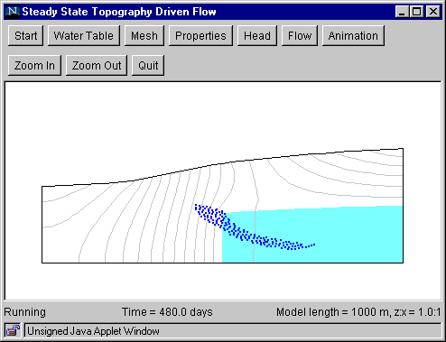

Step 7b: Animation (Particle Movement)
This step shows the movement of fluid particles whose initial positions are specified in Step 6b.
- Click the "Animation" button to bring up the
Animation Dialog Box.
- Set the animation speed by specifying the amount of travel time
(in days or years) that is equal to 1 second of animation time. The
appropriate speed will depend on the domain length, water table shape,
and hydraulic properties. For an initial attempt, try setting 1 second
of animation time = 10 days. If the resulting animation is too slow,
then increase the animation speed (for example, 1 second of animation
time = 100 days). If the animation is too fast, decrease the
animation speed (for example, 1 second of animation time = 1 day).
- Set the animation smoothness by specifying
number of frames per second.
- Click "OK" and wait for the window to be
refreshed.
- To start the animation, click anywhere inside
the window (below the buttons).
- Additional clicks alternately freeze and
unfreeze the animation.
- The elapsed travel time is shown at the bottom of the window.

Animation of fluid particle movement is computationally
intensive because particle positions are computed "on the fly,"
that is, during the animation process. Animating a large number
of fluid particles at fast animation speed could result in a "jerky"
animation because the computer cannot update the screen at the
required rate. If this occurs, stop the animation, reduce the
number of particles (draw a smaller polygon and/or increase the
particle spacing), and/or use a lower animation speed (reduced
the travel time per second of animation time). The animation
terminates when the last fluid particle exits the flow domain.
Back to Step 6b
Return to Introduction
|